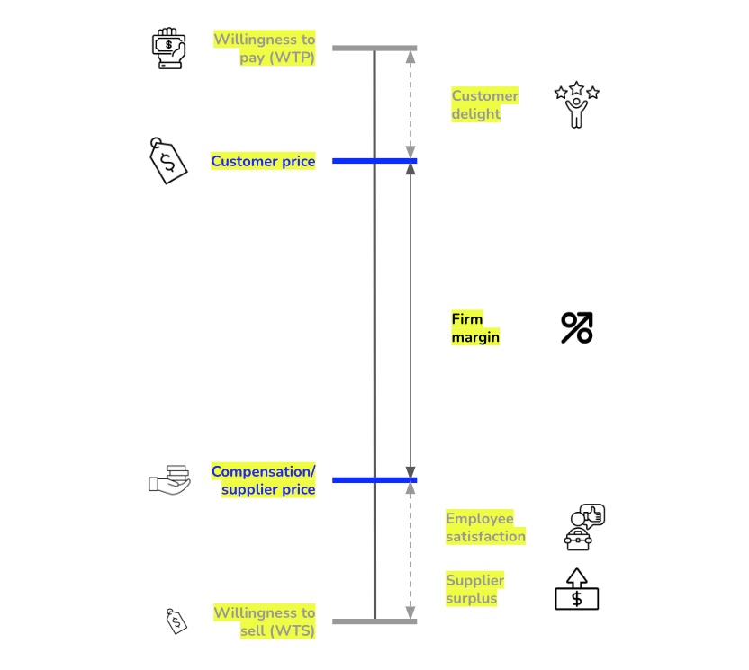

Value-Based Strategy
IN THIS SECTION, YOU WILL: Learn that an IT architecture can align technology decisions with value-based business strategy by simplifying IT initiatives, enhancing customer experience, improving employee work conditions, optimizing supplier relationships, and enabling business model shifts to maximize overall value creation.
KEY POINTS:
- Value-Based Strategy prioritizes initiatives that create value for customers (raising WTP), employees (improving work conditions), and suppliers (reducing costs).
- Reducing Complexity: Eliminating redundant systems and focusing on fewer, high-impact IT initiatives increases efficiency and strategic alignment.
- Enhancing Customer Experience: Seamless digital interactions, personalization, and high availability improve customer satisfaction and increase their willingness to pay (WTP).
- Improving Employee Productivity: Automation, better tools, and flexible work arrangements enhance job satisfaction and reduce friction.
- Optimizing Supplier Relationships: IT-driven supply chain efficiencies reduce suppliers’ costs and improve business partnerships.
- Leveraging IT for Ecosystems & Complementary Value: API-driven platforms and integrated digital services enhance core business offerings.
- Supporting Business Model Shifts: Adaptable IT architectures enable companies to pivot to new revenue streams (e.g., SaaS, cloud computing, AI-driven services).
As IT architects, we often focus on designing scalable, secure, and efficient systems. However, true architectural success comes from aligning IT strategy with business value creation. Felix Oberholzer-Gee’s article, “Eliminate Strategic Overload,” introduces a value-based strategy, which simplifies strategic decision-making by focusing on initiatives that create substantial value for customers, employees, and suppliers. This concept directly relates to IT architecture, underscoring how technology decisions should support overarching business goals.
Key Elements of Value-Based Strategy
At its core, value-based strategy focuses on three key elements:
- Creating value for customers by raising their willingness to pay (WTP).
- Creating value for employees by making work more appealing.
- Creating value for suppliers by reducing their operating costs.
 Figure 1: Value-based strategy focuses on three key elements.
Creating Value for Customers by Raising Willingness to Pay (WTP)
Businesses thrive when they deliver exceptional experiences that make customers value their products more—leading them to pay higher prices. A strong IT architecture enables this by powering digital innovations such as:
- Personalized recommendations (e.g., Netflix suggesting shows tailored to viewing history),
- Frictionless user experiences (e.g., Amazon’s one-click purchasing),
- Reliable digital services (e.g., mobile banking apps that are available 24/7).
These IT-driven capabilities increase customer satisfaction and loyalty, thereby raising their willingness to pay.
Creating Value for Employees by Making Work More Appealing
A productive, engaging work environment helps retain talent and boost performance. Organizations can achieve this by:
- Automating repetitive tasks (e.g., using RPA tools to handle invoice processing),
- Providing intuitive digital tools (e.g., Google Workspace for collaboration),
- Supporting hybrid work models (e.g., secure remote access through VPNs and cloud-based apps).
Robust IT architecture ensures these solutions are scalable, secure, and user-friendly—making daily work more enjoyable and efficient.
Creating Value for Suppliers by Reducing Their Operating Costs
Collaborative partnerships with suppliers flourish when businesses help improve their efficiency. This can be done through:
- Streamlined logistics systems (e.g., real-time tracking via IoT sensors),
- Data sharing for demand forecasting (e.g., Walmart sharing POS data with suppliers),
- Self-service supplier portals (e.g., automated invoice submission and status tracking).
These capabilities rely on integrated IT systems that facilitate transparency, speed, and accuracy—reducing costs and strengthening supplier relationships.
Creating Technology Ecosystem For Business Success
By embedding these principles into IT architecture, enterprises can create a technology ecosystem directly contributing to business success.
IT leaders should move beyond technical efficiency and align architectures with strategic value creation by:
- Simplifying technology stacks to focus on fewer impactful systems.
- Enhancing customer experiences through well-architected digital platforms.
- Improving employee work conditions with automation and seamless IT experiences.
- Optimizing supplier interactions through smart supply chain solutions.
- Building ecosystems and complements with flexible, API-driven architectures.
- Enabling business model shifts by designing adaptable IT infrastructures.
By adopting value-based strategy principles, IT architects ensure that technology is not just an operational enabler but a core driver of business value.
Reducing Complexity: Focusing on Fewer, High-Impact IT Initiatives
Modern enterprises face strategic overload, where multiple competing initiatives dilute impact. IT architecture often mirrors this complexity, with organizations maintaining redundant systems, fragmented data strategies, and competing technology stacks. Value-based strategy teaches that organizations should prioritize fewer, high-impact initiatives that maximize value. Enterprise architects should streamline technology portfolios, eliminating redundancies and focusing on platforms that create tangible business value.
For instance, instead of maintaining multiple CRMs across business units, a unified CRM that enhances customer experience and integrates with other functions increases willingness to pay (WTP).
Creating Value for Customers Through IT
The article emphasizes that companies succeed by increasing customers’ willingness to pay (WTP) through enhanced product appeal and user experience. IT architecture enables frictionless digital interactions, personalization, and high system availability. Cloud-native architectures, AI-driven recommendations, and omnichannel experiences contribute to higher WTP.
For example, Netflix’s personalized recommendation engine boosts customer retention by improving engagement and perceived value.
Enhancing Employee Experience Through IT
Value-based strategy also highlights improving employee conditions to reduce their willingness to sell (WTS)—making jobs more appealing. IT architecture supports this through better tools, automation, and flexible work arrangements. Enterprise systems should emphasize user-friendly interfaces, automation, and collaboration tools to improve productivity and satisfaction.
For instance, DevOps pipelines and infrastructure-as-code streamline deployment, making engineers more productive and engaged.
Optimizing Supplier Relationships with Technology
Companies create value by lowering suppliers’ WTS, reducing their operating costs and improving partnerships. IT architecture supports this through efficient procurement, automated supply chains, and data-driven insights.
Example: Nike’s lean manufacturing training, backed by analytics, cut costs and improved margins for both Nike and its suppliers.
Leveraging IT to Create Complementary Value
Value-based organizations seek complements—products or services that enhance the core offering. IT architecture should enable this via APIs and platform-based ecosystems.
For example, Apple’s integrated ecosystem (iPhones, App Store, iCloud) increases customer stickiness by delivering seamless complementary services.
Shifting Profit Pools with IT-Enabled Business Models
As industries evolve, companies must shift their profit pools—redirecting value capture to adjacent services. Adaptive IT architectures support these strategic pivots. Cloud computing, SaaS models, and AI insights help businesses transform.
Example: Microsoft’s transition from Windows licenses to a cloud-based subscription model (Azure, Office 365) showcases a profit pool shift enabled by IT.
To Probe Further
- A New Way to Think: Your Guide to Superior Management Effectiveness by Roger L. Martin, 2022.
- Eliminate Strategic Overload by Felix Oberholzer-Gee, 2021.
Questions to Consider
- How does your organization’s IT architecture currently contribute to customer value creation? Are there areas for improvement?
- In what ways does your company use IT to enhance employee experience and productivity?
- How can IT reduce complexity in your organization by eliminating redundant systems and focusing on fewer, high-impact initiatives?
- What role does IT play in improving supplier relationships and supply chain efficiencies?
- How well is your IT strategy aligned with business goals rather than just technical efficiency?
- What complementary digital services could your company offer to enhance core business value?
- Does your IT architecture support business model shifts, such as transitioning to subscription-based or platform-driven models?
- How does your organization ensure that IT investments prioritize strategic value rather than short-term technical fixes?
- What role do AI, cloud computing, and automation play in increasing efficiency and competitive advantage within your company?
- How can enterprise architects better collaborate with business leaders to align IT initiatives with overall value creation?
On Strategy ← Achieving Market Leadership |
On Strategy Marketplace Strategies: What Digital Marketplaces Sell? → |